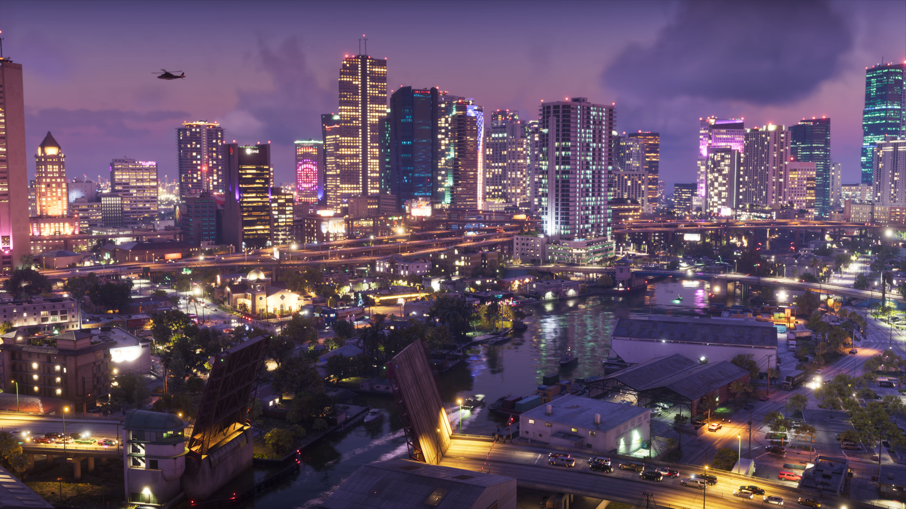

Condado de Vice-Dale · Zona 01
Vice City Downtown
El corazón financiero y criminal del estado. Rascacielos bañados en luces púrpura, puentes levadizos sobre los canales y persecuciones aéreas en helicóptero a medianoche.